地政学
ドーハは小国カタールの首都であり、イラン、サウジアラビア、米国、トルコ、アジア市場を結ぶ湾岸の交渉拠点です。LNG輸出、空軍基地、衛星放送、調停外交が都市に集まり、半島の狭さが逆に世界との接続を強めています。
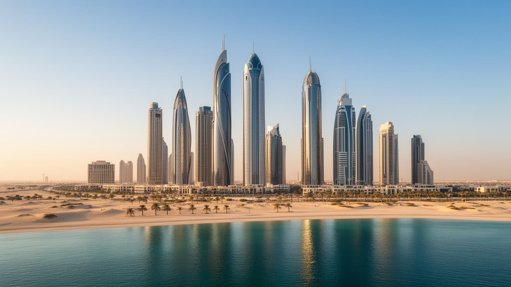
🇶🇦 カタール / アジア / World City Atlas
湾岸の小半島で国家の富と外交を束ねる首都。LNG、金融、移民労働、宗教、教育、スポーツ、海辺の生活が重なる都市です。
都市の骨格
ドーハは高層ビルだけの都市ではありません。LNG輸出、外交調停、移民労働、イスラムの暦、教育投資、スポーツ大会、海岸開発が、短い距離の中で国家運営と日常生活を結びます。
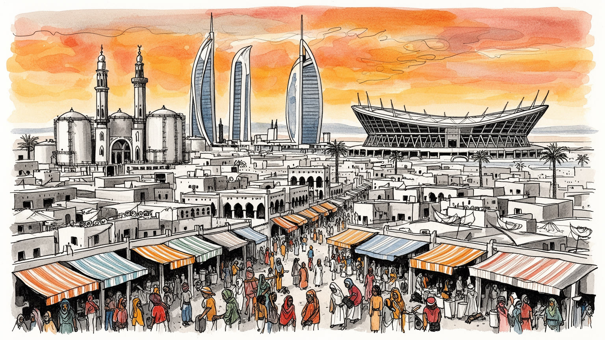
ドーハは小国カタールの首都であり、イラン、サウジアラビア、米国、トルコ、アジア市場を結ぶ湾岸の交渉拠点です。LNG輸出、空軍基地、衛星放送、調停外交が都市に集まり、半島の狭さが逆に世界との接続を強めています。
LNG、金融、行政、航空、港湾、建設、教育、スポーツイベントが都市を支えます。現場では南アジアやアフリカの移民労働者が清掃、警備、家事、飲食、工事、配送を担い、豊かな首都の便利さと格差を同時に見せています。
イスラムの礼拝、ラマダン、家族、アラビア語、詩、海の記憶が公共生活を整えます。一方でスーク、博物館、教育都市、放送局、各国料理、教会や寺院の存在が、多国籍な住民の文化を管理された形で共存させています。
住民の生活は車道、メトロ、モール、学校、海岸、労働者宿舎、郊外住宅で組み立てられます。観光客はスーク・ワーキフ、イスラム美術館、コーニッシュ、カタラ、砂漠、競技場を巡り、暑さと冷房の差も体験します。
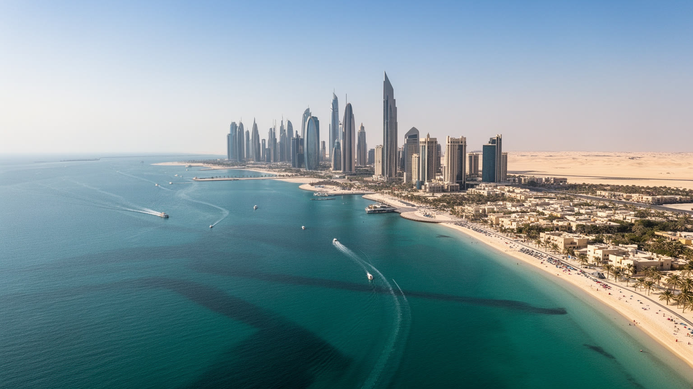
ドーハはカタール半島の東岸にあり、砂漠、浅い湾、埋立地、港、空港、海岸道路が近い距離で並ぶ。地図で見ると国土は小さいが、都市の視線は常に海へ開いている。真珠採りと漁業の記憶を持つ海は、現在ではLNG輸出、コンテナ港、航空、観光、淡水化、冷却、マリーナ開発と結びつく。コーニッシュ沿いからウェストベイの高層街を見ると、国家の近代化が海岸線に沿って演出されていることが分かる。一方で、都市を成立させる水は雨ではなく海水淡水化とインフラに依存し、緑地や室内の快適さは大量のエネルギーで維持される。隣接するルサイルやアル・ライヤーン、教育都市、工業地区とつながる広域圏は、行政上のドーハ自治体を越えて日常の都市として機能する。海岸の美しさだけでなく、砂、湿度、潮位、埋立、道路の幅、公共交通の新しさを読むと、ドーハが自然条件を技術と資本で押し広げてきた都市であることが見えてくる。海岸に並ぶ公園や遊歩道は余暇の場所であると同時に、国民と外国人、観光客、労働者が同じ景観を共有する数少ない公共空間でもある。潮の匂い、砂じん、冷房された車内、夜の散歩が交互に現れることで、都市は砂漠と海の境界にあることを毎日思い出させる。港と空港の位置を重ねると、ドーハの地理が輸出、乗継、観光、緊急時の補給を同時に担う戦略的な土台だと分かる。
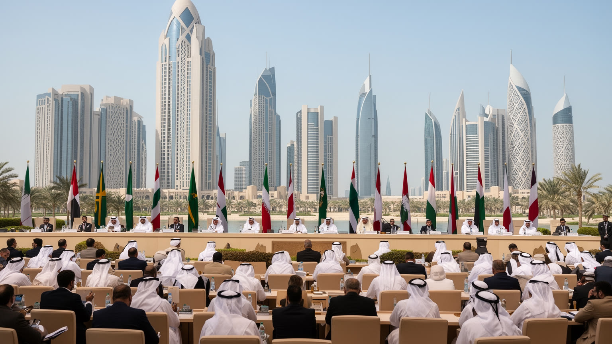
ドーハはカタールの行政首都であり、首長家、官庁、大使館、国営企業、投資機関、国際会議の場所が集まる。人口も面積も大国ではないカタールが存在感を持つのは、資源収入、米軍基地、衛星放送、調停外交、スポーツイベント、教育投資を組み合わせて、都市を外交の舞台にしてきたからである。湾岸危機では周辺国との断交を経験し、食料、物流、空路、港湾、金融の脆さと強さが同時に試された。ドーハの政治空間は、議会制の首都とは異なり、君主制の権威、部族的な関係、官僚機構、国際同盟、企業国家的な意思決定が重なっている。都市の秩序は静かで整って見えるが、その背後ではイラン、サウジアラビア、米国、トルコ、欧州、アジアのエネルギー需要を見ながら判断が行われる。会議場、ホテル、大使館街、空港ラウンジは観光の背景ではなく、小国が安全と影響力を確保するための実務空間である。調停役としてのドーハは、対立する勢力を同じテーブルに呼び、公式外交と非公式接触の間を動く。その柔軟さは強みだが、地域の緊張や大国の思惑に巻き込まれる危うさもある。首都の静けさは、資源と同盟、情報発信、危機管理によって保たれる政治的な均衡である。国内では国民福祉と外国人労働の管理を両立させる必要があり、外では友好関係を広く保つ必要がある。この二重の調整が、ドーハの首都性を日常の道路やホテルにも刻んでいる。
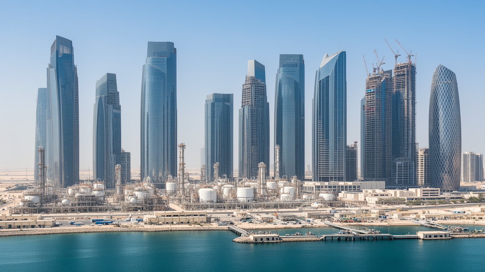
ドーハの豊かさは北部ガス田とLNG輸出に深く支えられている。ガスは港やプラントで生まれるだけでなく、首都の道路、地下鉄、学校、病院、住宅、文化施設、競技場、政府系ファンドへ姿を変える。ウェストベイの金融街や行政機関は、資源収入を世界投資、国民福祉、インフラ、企業誘致に振り向ける装置でもある。金融、保険、不動産、建設、ホテル、航空は、資源を背景にした国家プロジェクトと結びついて成長してきた。ただし、脱炭素化が進む世界では、ガスが石油より移行燃料として評価される時期があっても、永遠の保証にはならない。価格変動、欧州とアジアの需要、供給契約、再生可能エネルギー、地政学リスクは、ドーハの公共投資と雇用の余裕にも影響する。豊かな都市を見るときは、摩天楼やモールだけでなく、資源収入の配分、外国人労働者への還元、将来世代のための投資、気候政策との矛盾を同時に読む必要がある。資源は国民に高い生活水準をもたらす一方、経済を国家部門と大型事業へ偏らせやすい。民間企業の厚み、技能の継承、若者の仕事、女性の就業、研究開発の実力が育つかどうかが、資源後の都市を左右する。LNGの契約は長期でも、都市の未来は毎年の投資判断にかかっている。政府系ファンドの収益は遠い市場の金利や株価にも左右されるため、世界経済の変動は首都の予算感覚に静かに入り込む。
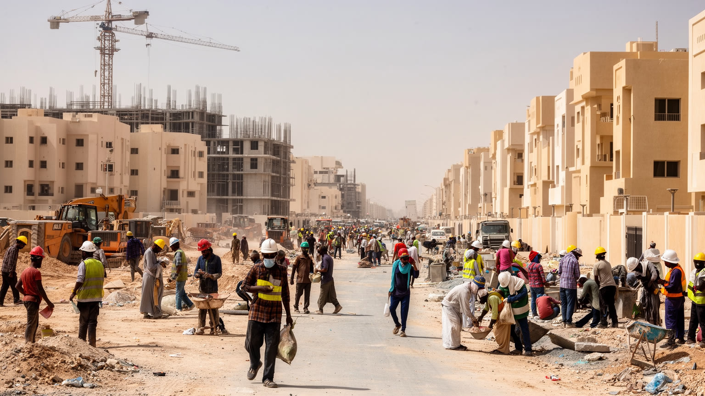
ドーハの都市生活は、外国人労働者なしには成り立たない。南アジア、東南アジア、アフリカ、アラブ諸国から来た人びとが、建設、清掃、警備、飲食、家事、運転、ホテル、病院、港湾、配送、空港で働く。高所得の専門職、国営企業の職員、家族帯同の居住者、単身の現場労働者は同じ都市圏にいるが、住宅、賃金、移動、休日、医療、政治参加、将来の帰属は大きく違う。ワールドカップの準備を通じて労働制度は国際的な注目を受け、最低賃金や雇用主変更などの改革も進んだが、仲介料、暑熱下の作業、宿舎の距離、契約の不透明さはなお重要な論点である。労働者の送金は故郷の家族を支え、ドーハの建設現場はインド洋を越えた生活圏とつながる。きれいな駅、冷房の効いたモール、整った海岸、公園、ホテルの快適さは、誰かの夜勤と通勤時間によって支えられている。都市の豊かさを読むなら、見える建築だけでなく、働く人がどこで休み、誰に相談できるかを見る必要がある。休日の公園、安い食堂、送金窓口、宿舎から出るバスは、公式な観光地ではないが都市の本当の動線である。家族を呼べる人と呼べない人の差、永住に届かない不安、言語の壁も、ドーハの日常を形作る。労働条件の改善は国際評価のためだけでなく、都市を支える人が疲弊しないための基盤である。便利な首都ほど、その便利さの費用を誰が払うのかが問われる。
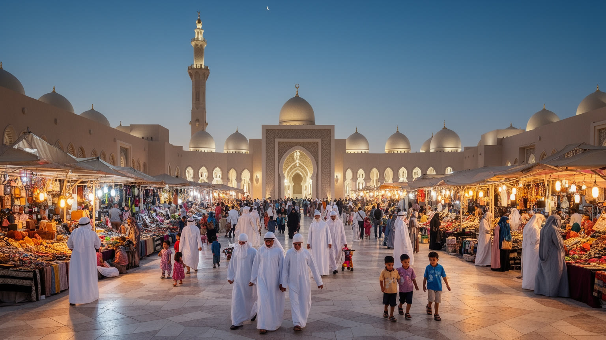
ドーハの日常には、イスラムの礼拝時間、ラマダン、金曜礼拝、家族の集まり、慈善、もてなしの作法が深く入り込んでいる。モスクは観光写真の対象である前に、生活の時間を区切り、地域の関係を保つ場所である。ラマダン中は食事、勤務、学校、買い物、夜の外出のリズムが変わり、断食明けの食卓や夜市が都市に別の時間を作る。公共空間では服装、飲酒、家族向け空間、男女の距離、言葉遣いに独自の節度があり、外国人住民や観光客もその枠組みの中で暮らす。一方で、教会や寺院、各国の礼拝の場も存在し、多国籍の労働者や専門職が自分の信仰を保つ余地を作っている。ただし、その共存は自由放任ではなく、国家が管理する秩序の中で成り立つ。ドーハの宗教を読むことは、壮麗な建築だけでなく、学校の暦、職場の休憩、家庭内労働者の食事、移民の祈り、祝日の交通まで見ることである。信仰は都市の速度を調整し、国民と外国人が同じ空間を使うための実務にもなっている。家族のプライバシーを重んじる住宅、女性専用や家族向けの時間設定、礼拝に合わせた商業の動きは、都市設計にも影響する。宗教は個人の内面だけでなく、街の音量、時間割、公共の礼儀を決める共通語である。多国籍の住民が増えるほど、食の規則、休日、葬送、子どもの教育をめぐる調整も増える。静かな共存は、日常の小さな配慮の積み重ねで支えられる。
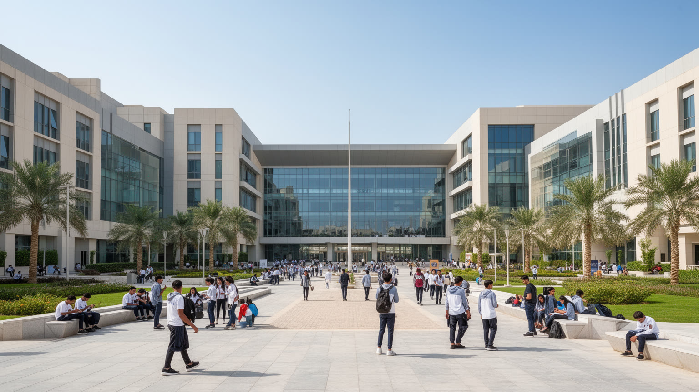
ドーハは資源都市であると同時に、教育とメディアへの投資で国の輪郭を広げてきた都市である。教育都市には海外大学の分校、研究機関、図書館、学生寮、会議施設が集まり、カタールが小さな人口で知識産業を育てようとする意思を示す。アルジャジーラに代表される放送と情報発信は、アラブ世界の政治議論に大きな影響を与え、ドーハをニュースと外交の交差点にした。教育とメディアは単なる産業ではなく、国際的な評価、言語、女性の学び、若者の進路、言論の範囲をめぐる政策でもある。海外大学の看板は都市に開放的な印象を与えるが、研究の自由、公共の議論、地域社会との接続、卒業後の雇用をどう整えるかは簡単ではない。ドーハの知識投資を読むには、近代的なキャンパスの美しさだけでなく、誰が学べるのか、どの言語で議論するのか、移民の子どもや低所得の労働者がその機会に届くのかを見る必要がある。発信力は都市の力だが、発信できる人とできない人の差も同時に浮かび上がる。図書館、博物館、研究会、映画祭、報道機関は、資源で得た富を知識と議論へ変える場所である。そこが国際的な専門家だけの島にならず、学校や地域、若い住民の将来とつながるほど、都市の文化的な厚みは増していく。英語とアラビア語が交差する学びの場では、国際性と地域の言葉をどう両立するかも問われる。知識都市の実力は、輸入された制度を自分の社会へ根づかせる力に表れる。
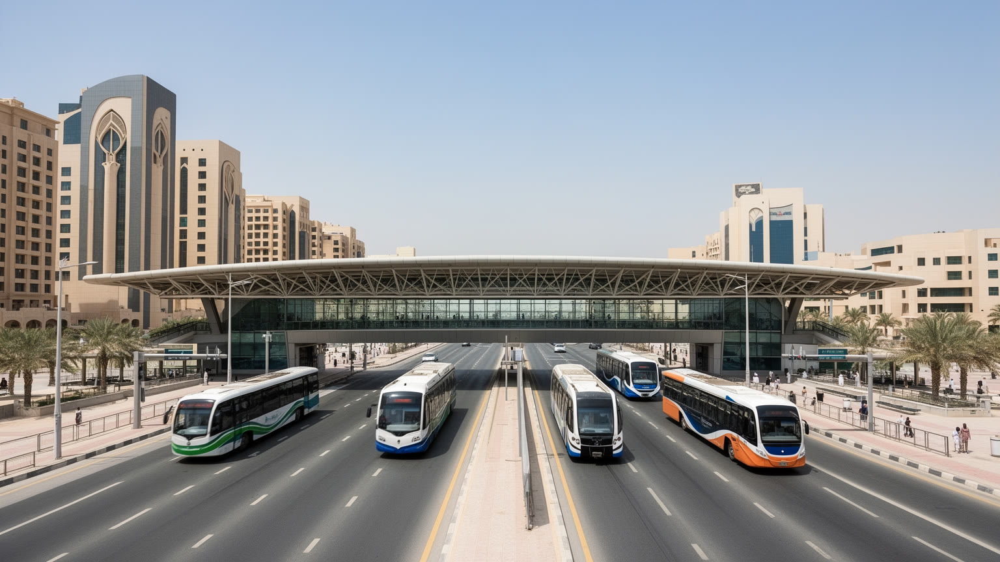
ドーハの都市形態は、広い幹線道路、郊外住宅、モール、オフィス街、海岸開発、工事中の空地によって作られてきた。長く車中心の都市だったため、暑さの中で歩ける範囲は限られ、生活の単位は自宅、学校、職場、モール、モスクを車で結ぶ形になりやすい。近年のメトロ整備は、この構造に新しい軸を通した。空港、中心部、教育都市、競技場、郊外を結ぶ鉄道は、イベント輸送だけでなく、外国人労働者、学生、観光客、車を持たない住民に別の移動手段を与えている。ただし、駅の周りに日陰、歩道、横断、店、住宅がそろわなければ、鉄道は都市生活を完全には変えられない。ムシェイレブの再開発は、伝統的な路地の密度と現代的な環境性能を組み合わせようとする試みであり、スーク・ワーキフは観光と日常の境界を見せる。ドーハの都市開発を読むには、巨大プロジェクトの完成度だけでなく、暑い日に人が歩けるか、家賃が誰を押し出すか、古い記憶が新しい街区で使われ続けるかを見る必要がある。歩行者の少ない広い道は整然として見えるが、都市の親密さを作りにくい。メトロ駅前の木陰、バス停、安い飲食店、公共ベンチ、夜に安心して歩ける路地が増えるかどうかが、これからの暮らしやすさを左右する。都市の成長がルサイルや周辺自治体へ伸びるほど、行政境界ではなく通勤と買い物の実態で都市圏を見る必要がある。交通はイベントのためだけでなく、日々の孤立を減らす制度でもある。
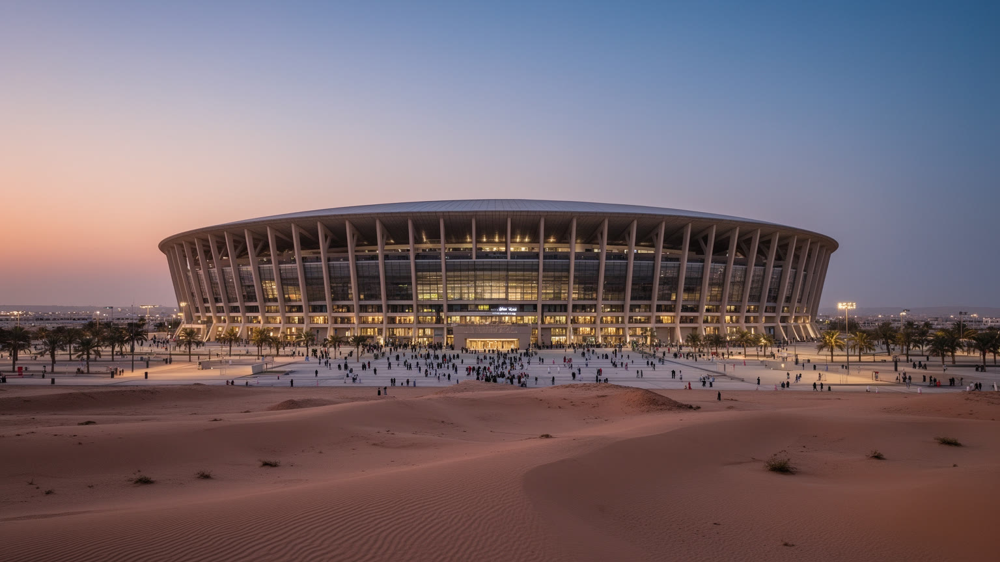
ドーハはスポーツを都市開発と外交の道具として使ってきた。アジア大会、世界陸上、サッカーの国際大会、テニス、競泳、モータースポーツ、そしてワールドカップは、競技場、地下鉄、道路、ホテル、空港、公共空間を一気に整備する理由になった。競技場は試合の場であると同時に、国が自分を世界へ見せる舞台である。暑熱に対応する設計、観客輸送、治安、多言語案内、ファンゾーン、宿泊施設は、都市運営の能力を示す展示でもあった。一方で、スポーツイベントは労働問題、費用、施設の後利用、表現の自由、観光と住民生活の摩擦を伴う。大会が終わった後に残るものが、住民の運動、学校、公共交通、地域の余暇へ結びつかなければ、競技場は記念碑にとどまる。ドーハのスポーツ外交を読むには、華やかな開会式や試合結果だけでなく、建設労働者、清掃員、警備員、ボランティア、周辺住民、若い選手がどのような利益を得るのかを見る必要がある。スポーツは国際的な承認を得る手段であり、都市の社会契約を問う鏡でもある。大会の記憶が一時的な祝祭で終わるか、公共交通の利用、女性や子どもの運動、地域クラブ、健康政策へ残るかで評価は変わる。観客を運んだインフラが日常を運べるとき、スポーツ投資は都市の資産になる。競技場周辺の公園や駅が住民の普段使いになるほど、国際大会の記憶は都市生活へ溶け込む。逆に空白の施設が増えれば、華やかな投資は維持費の重さとして残る。
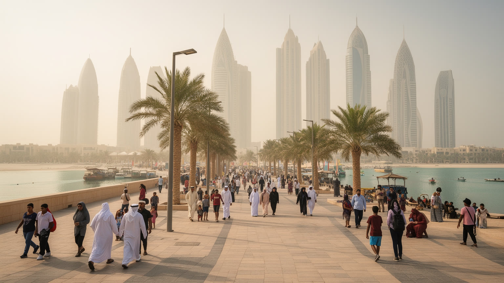
ドーハの気候は、都市の豊かさと格差をはっきり映す。夏の酷暑と湿度は、屋外の移動、建設、清掃、警備、配送、観光、学校生活を制約し、冷房された室内と屋外労働の差を大きくする。電力、水、冷房、淡水化、緑化は生活を可能にするが、同時に大量のエネルギー消費と海岸環境への負荷を生む。気候変動が進めば、暑熱、海面上昇、高潮、砂じん、水資源の問題はさらに重くなる。高所得者は車、冷房、広い住宅で暑さを避けられるが、現場労働者、低所得者、徒歩移動の人は熱の影響を受けやすい。政府は夏季の屋外労働規制や環境政策を進めてきたが、都市の快適さが誰に届いているかを確認し続ける必要がある。日陰の歩道、涼める公共空間、休憩時間、宿舎の質、医療へのアクセスは、気候適応の具体的な指標である。ドーハの未来を読むことは、巨大な冷房都市を維持する技術だけでなく、暑さの中で働く人をどの程度守れるかを問うことでもある。海岸の開発は魅力的な景観を作るが、浅い湾の生態系、排水、埋立、海水温の上昇にも影響する。快適な都市を作るほど環境負荷が増える矛盾を、技術と規制、生活習慣の変化でどこまで抑えられるかが課題になる。学校や職場の時間、屋外イベントの開催時期、観光の季節も気候に左右される。暑さを避ける能力の差は、そのまま都市の不平等として現れる。
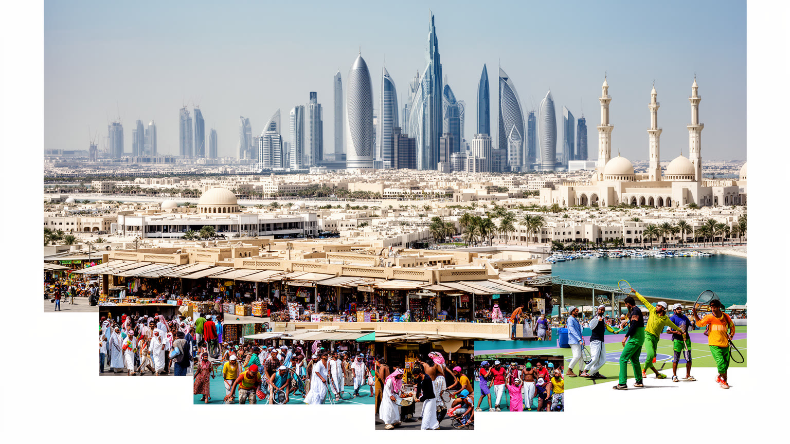
ドーハは、湾岸の小国が資源を使って世界地図の中に自分の位置を作った都市である。LNG収入は金融、教育、航空、港湾、文化施設、競技場、福祉へ流れ、外交調停やメディア発信は国土の小ささを補う影響力を生む。高層街、スーク、海岸、メトロ、モール、モスク、教育都市、競技場は、それぞれ別の顔に見えるが、実際には国家の安全、資源収入、国際評価、移民労働、宗教秩序、気候適応が一つに絡んだ都市装置である。ドーハを単なる豊かな首都として見ると、労働者宿舎、送金、暑熱、淡水化、海岸環境、表現の制約、国民と外国人の帰属差が見えにくくなる。逆に問題だけを見ても、教育、医療、交通、文化投資、外交の柔軟さ、地域を越える接続の力を見落とす。重要なのは、資源で得た時間をどのように将来へ移し替え、国民だけでなく都市を支える多国籍の住民にどの程度の安定を与えられるかである。ドーハの成熟は、建築の新しさより、暑さの中で働く人、祈る人、学ぶ人、訪れる人が同じ都市で尊厳を保てるかに表れる。市場の食堂、送金窓口、大学の教室、空港、競技場、海岸の散歩道をつなげて見ると、公式な国家イメージの下に日々の生活があることが分かる。都市の強さは、世界へ見せる舞台と、そこに暮らす人の普通の時間がどこまで近づけるかで決まる。だからドーハは、資源首都であると同時に、未来の湾岸都市が抱える希望と緊張を凝縮した場所でもある。